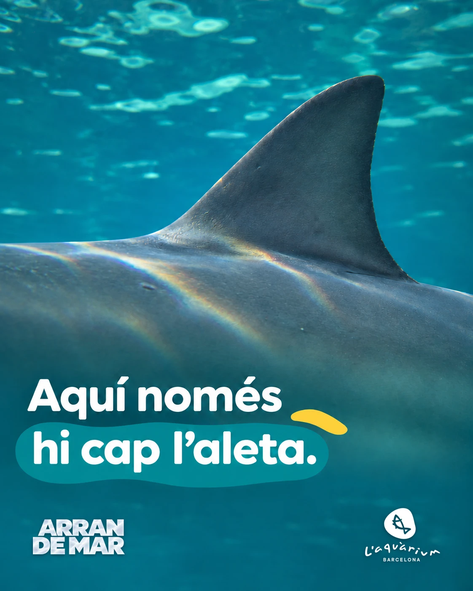
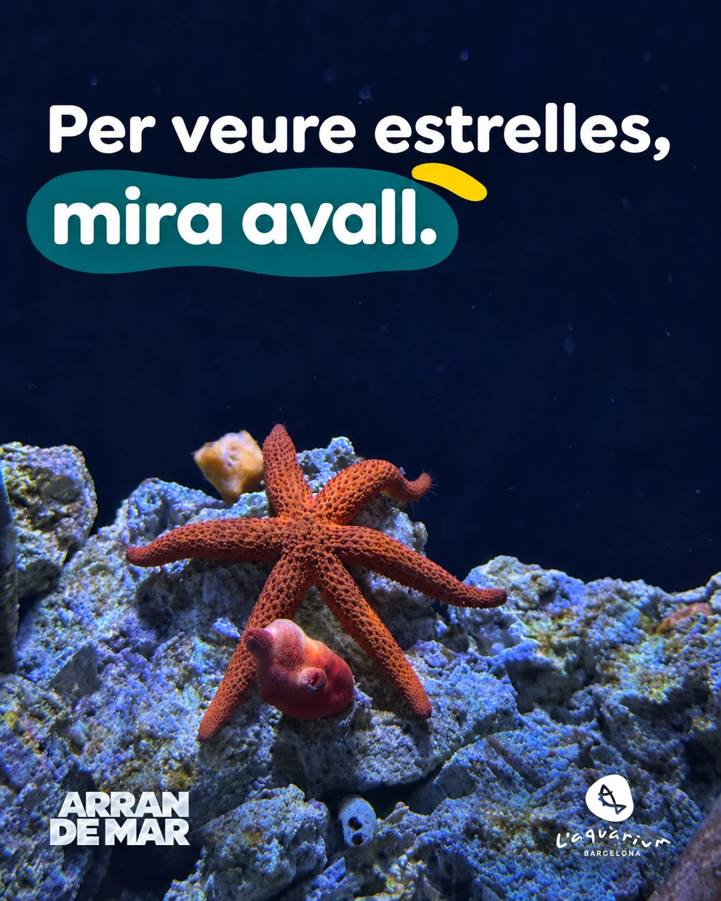
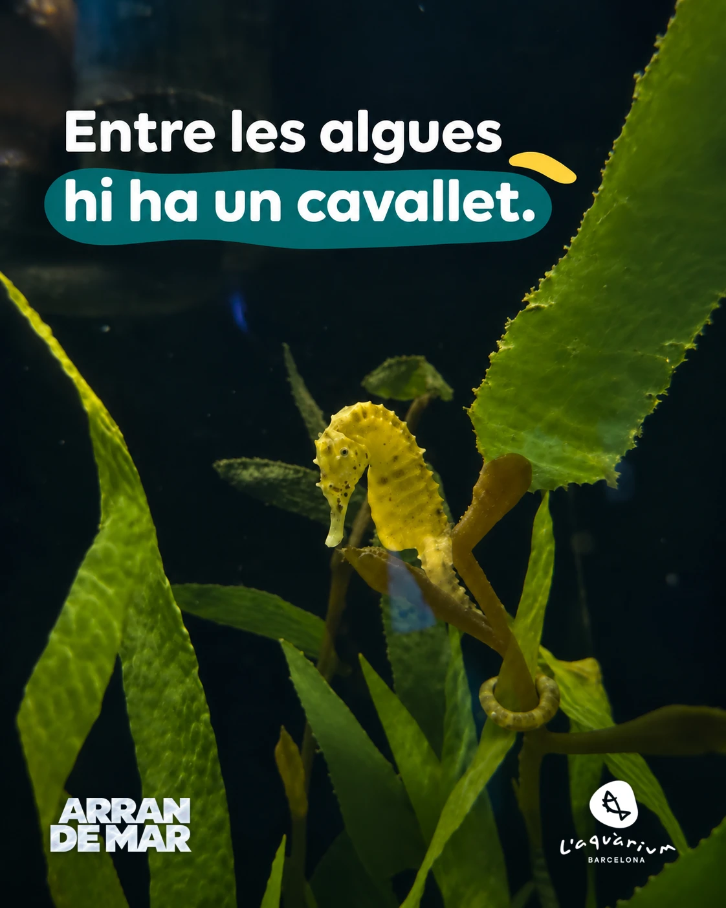
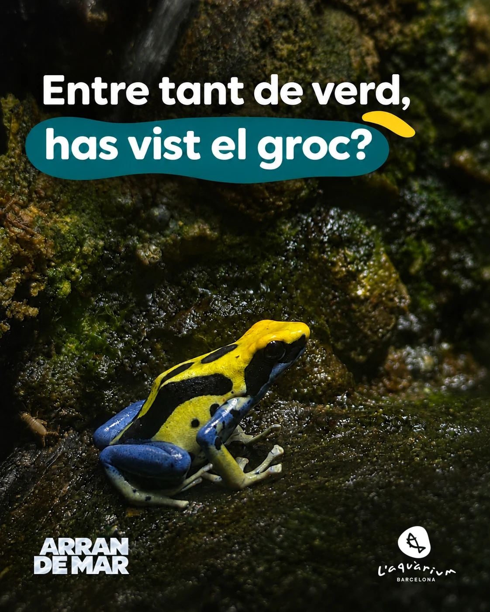

L'Aquàrium de Barcelona · Campaña experiencial
A ras de mar
Una campaña experiencial que convierte el paseo por el Port Vell en la primera sala de L'Aquàrium. Pisas una forma azul, bajas la mirada y descubres que estás sobre la aleta de un tiburón.
Propuesta conceptual, no encargada por L'Aquàrium. Mi papel: el recorrido, los mensajes en catalán, el reparto de la revelación entre mupi, pavimento y vídeo, y la dirección visual de la serie.
- Experiencia de marca
- Concepto creativo
- Copywriting
- Exterior y vídeo

La idea creativa
El mar empieza en el paseo
Quería despertar la curiosidad de quienes pasean por el Port Vell sin tener previsto entrar en L'Aquàrium. Partí de algo cotidiano: puedes caminar junto al mar y apenas pensar en lo que hay bajo la superficie.
Propuse que la visita empezara en el paseo. Una silueta azul hace que bajes la mirada y, cuando pisas la aleta, el titular pone palabras a lo que acaba de pasar: «Acabes de trepitjar una aleta.» A partir de ahí, cada mensaje te invita a hacer algo distinto: te comparas con un animal, levantas la vista hacia el agua y encuentras el camino hasta L'Aquàrium.
En el mupi solo ves la aleta. En el paseo descubres el tiburón entero. Diseñé las dos piezas para que la curiosidad que abre una se resuelva al encontrarte con la otra.
El recorrido
Tres momentos, tres miradas
-
Te detienes · mira al suelo
«Acabes de trepitjar una aleta.»
Acabas de pisar una aleta.
Una forma azul cruza tu camino. Te paras sobre la aleta, sigues el contorno con la mirada y aparece el tiburón entero. La frase convierte una pisada cualquiera en el comienzo de la visita.
-
Te comparas · mírate a ti
«Posa-t’hi al costat. A veure qui ocupa més.»
Ponte a su lado. A ver quién ocupa más.
Una segunda silueta te guarda un sitio a su lado. Te colocas, comparas tu tamaño con el del animal y descubres qué especie es. Un pequeño reto que se resuelve allí mismo.
-
Miras al agua · levanta la vista
«Ara mira l’aigua. Què hi deu haver a sota?»
Ahora mira el agua. ¿Qué habrá debajo?
Junto al puerto, después de mirar el suelo, levantas la vista hacia el mar. Un plano breve te indica cómo seguir hasta L'Aquàrium.
El primer mensaje reconoce un gesto, el segundo propone una acción y el tercero abre una pregunta.

Del cuerpo a la aleta
En la primera versión, la chica pisaba el cuerpo del tiburón. Al llevarla a la aleta dorsal, la escena justifica literalmente el titular. El texto pasó a una sola línea, más pequeña, para que pareciera parte del suelo.
Dónde pasa
Del paseo a la puerta
Tres paradas por el Port Vell, siempre junto al agua. El camino termina en la entrada de L'Aquàrium.
Las especies y sus medidas se validarían con L'Aquàrium, y las intervenciones en el pavimento se coordinarían con el Port de Barcelona, con pintura temporal.
Fuera del paseo
Fragmento y revelación

El mupi
«Aquí només hi cap l’aleta.»
Aquí solo cabe la aleta.
La aleta en primer plano y el borde del cartel como parte del mensaje: imaginas cuánto queda fuera. En el paseo, la silueta completa resuelve la intriga. Cada pieza funciona sola, y juntas se completan, aunque las encuentres en distinto orden.
El vídeo · storyboard
Empieza a ras de suelo, siguiendo unos pies que se detienen sobre la aleta. El plano se abre y aparece el tiburón entero: la altura de la cámara decide cuándo entiendes lo que estás viendo, igual que en el paseo.
Acabes de trepitjar una aleta.
- 1 · A ras de suelo, unos pies caminan.
- 2 · Se detienen justo sobre la aleta.
- 3 · Retroceden para entender qué pisan.
- 4 · La cámara sube: la silueta completa junto a la persona.
La serie
Carteles para mirar dos veces
Dentro de L'Aquàrium, la misma forma de mirar. Cada fotografía lleva una frase corta y cercana que te orienta hacia un detalle: la estrella que está abajo, la flor que no es una flor. La tipografía blanca, la banda turquesa y el acento amarillo unen fondos y colores muy distintos. Fotografías propias.
-

«Sembla una flor. Mira-t’ho bé.»
Parece una flor. Míratelo bien.
-

«Per veure estrelles, mira avall.»
Para ver estrellas, mira abajo.
-

«Entre les algues hi ha un cavallet.»
Entre las algas hay un caballito.
-

«Entre tant de verd, has vist el groc?»
Entre tanto verde, ¿has visto el amarillo?
Estrategia
Ficha de campaña
- Para quién
- Quien ya pasea por el Port Vell sin tener previsto entrar en L'Aquàrium: visitantes, gente del barrio, parejas y familias. Están junto al mar, tienen tiempo y el paseo ya es su plan.
- El objetivo
- Que se detengan, sientan curiosidad y sigan hasta L'Aquàrium. Y que, aunque continúen paseando, se lleven la sorpresa de haber pisado un tiburón.
- Cómo lo mediría
- Un enlace identificable en cada soporte para saber qué pieza lleva hasta la taquilla, además de las fotos compartidas con las siluetas y las visualizaciones del vídeo.
- Carácter
- Propuesta conceptual, no encargada por L'Aquàrium. Simulaciones creadas con IA y fotografías propias del acuario.
Arran de mar
Un paseo por el Port Vell que termina bajo el mar.
«Arran de mar» firma las piezas en catalán. El descubrimiento empieza en el suelo que ya estás pisando.
Proyecto conceptual: propuesta personal no encargada ni aprobada por L'Aquàrium de Barcelona. El nombre y el logotipo se usan solo para ilustrar el caso. Las fotografías de los carteles y el vídeo de peces de la portada son propios; el mapa y el storyboard son ilustraciones propias. La foto del paseo y el vídeo del recorrido son simulaciones creadas con IA para mostrar cómo quedaría la campaña.